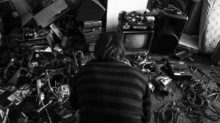

An Ton Kaun
Susanne Steinmassl
Germany 2014
10 min – 35mm on HD – German OV
Sc+E: Susanne Steinmaßl – DoP: Karl Kürten – P: David Armati Lechner - SD: David Armati Lechner, Daniel Asadi Faezi, Jakob Defant – M: Aton Kaun aka Rumpeln aka Sonytony
Experimental portrait of Noise and video artist Anton Kaun, who became famous in the atmosphere of "Notwist" and "Console".
monday 12 oct 10.30 pm werkstattkino
Susanne Steinmaßl born 1985, is based in Munich. Currently student at the University of Television and Film in Munich. Bachelor of Fine Arts and Magister (Master) of German Literature, Politics, Philosophy at the Ludwig-Maximilians-University Munich.
Films (selection) Where is the ghost of the town? 2011 – Manchmal hört es so auf, wie es begonnen hat 2012 – Body is a Foreign Country 2014 – Clouds so far 2014